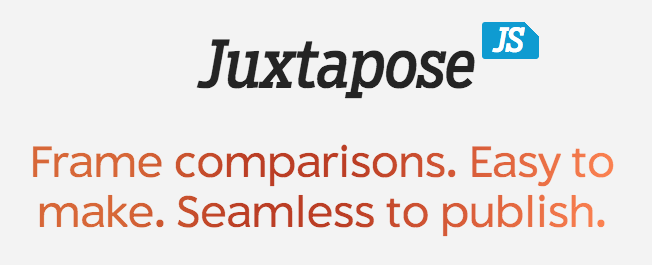

Free Web journalism tools and technology
Dan Hill
/
@DanHillReports
First tweet!
This was my last job
This was my last job
Things I do
Analyze
Visualize
Scrape
Code
Things I also do
Interview
Request records
Write
Start your text editors!

Many more!
Free?!
Read
Terms
of
Service
What type of "free"
is it?
Is it
open
source
?
Choose tools wisely
What tool should I use?
What story do I want to tell?
What tool should I use?
What story do I want to tell?